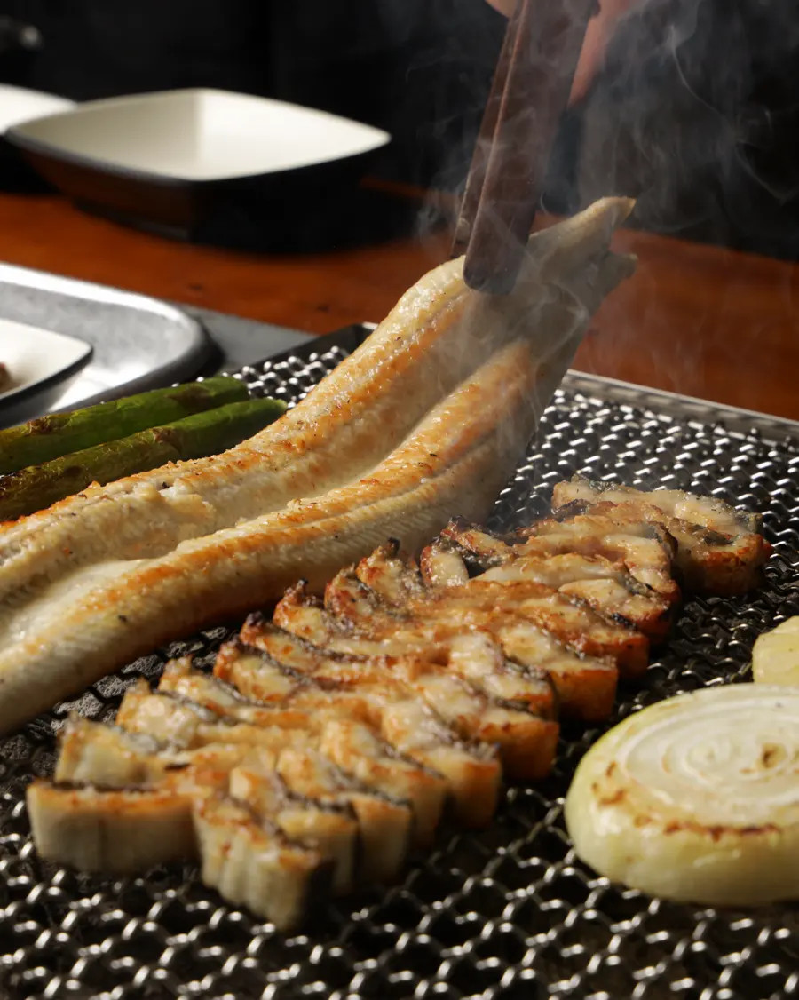
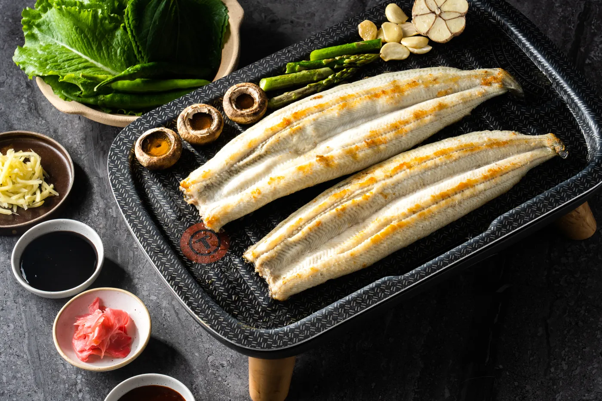

판매대에서 고르기
깔끔하게 손질한 장어가 수산 판매대에 놓여 있습니다. 눈으로 보고 원하는 만큼 고르시면 됩니다.

삼원수산이 직접 기른 장어를 산지 그대로 내놓습니다
품장은 나주 삼원수산이 직접 키운 장어를 파는 직판장입니다. 양식장에서 기른 국산 100% 무항생제 자포니카 장어를 중간 유통 없이 매장 판매대에 올립니다.
2009년
삼원수산이 장어 양식을 시작한 해
100%
국산 자포니카 민물장어
2곳
나주점과 을왕리점
손질한 장어를 직접 보고 고르면, 초벌해서 자리까지 가져다 드립니다.
깔끔하게 손질한 장어가 수산 판매대에 놓여 있습니다. 눈으로 보고 원하는 만큼 고르시면 됩니다.

고른 장어는 초벌대에서 한 번 구운 뒤 먹기 좋게 썰어 자리로 가져다 드립니다.

준비된 숯불 위에서 노릇하게 구워 가며 드십니다.
장어를 기르는 곳, 장어 이야기, 두 매장을 차례로 소개합니다.
